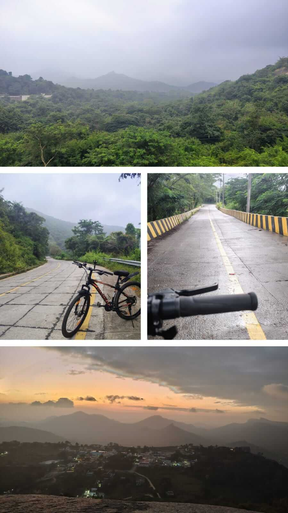
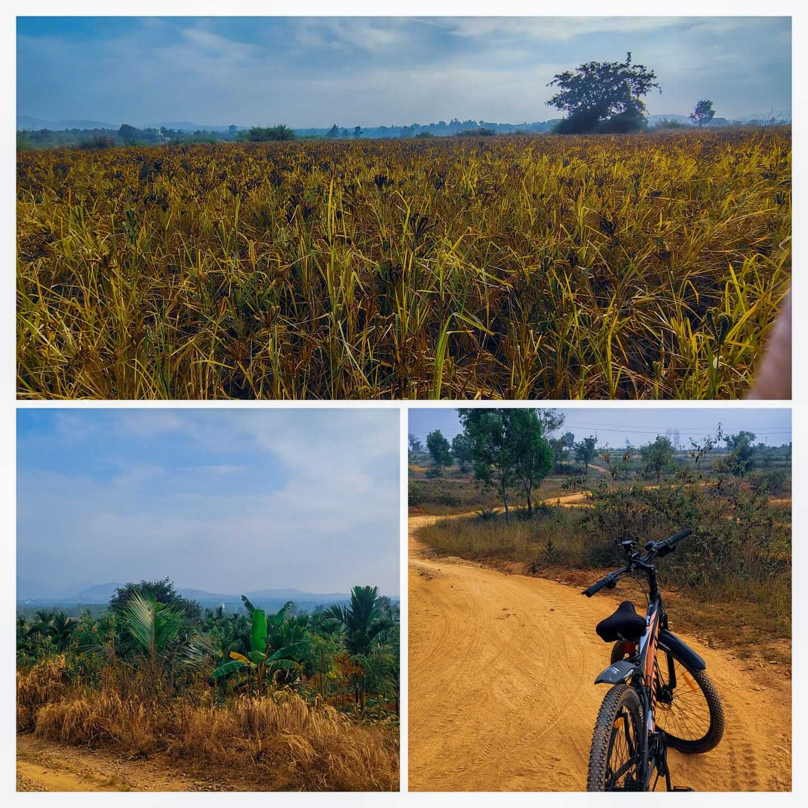

Top 5 Cycling Places in Tumkur
The best routes for every rider in Tumkur, from hill climbs to lake views.
Tumkur offers some of the best cycling routes in Karnataka. Whether you want a tough climb or a quiet ride by a lake, here are the top 5 must-visit spots.
1. DD Hills (Devarayanadurga)

The iconic climb to Devarayanadurga temple.
The most popular hill climb in the district. It is about 15km from the city and offers a great workout with steep gradients and hair-pin bends. Perfect for early morning rides to catch the sunrise.
2. Bamboo Forest (Namada Chilume)

Lush greenery along the Namada Chilume route.
A scenic route through wait-protected forest areas. The roads are well-maintained and mostly flat with some rolling sections. It's about 12km from the city center.
3. Mydala Kere

Serene vibes at Mydala Lake.
Located about 18km away, Mydala Kere is a beautiful spot for a weekend ride. The road is quiet and surrounded by greenery.
Added Bonus Place: Palasandra

On the way to Mydala, do not miss the Palasandra detour. It offers a stunning view of the sunset and is much quieter than the main lake area.
4. Gulur Kere

Wide open roads near Gulur Lake.
A short 10km ride from the city. The road follows the canal and is very flat, making it ideal for beginners or quick evening sessions.
5. Bugudanahalli Lake (Bully Lake)

A scenic stop on the way to DD Hills.
Known localy as Bully Lake, this spot is perfect for those who want a shorter 14km ride or a pitstop before climbing DD Hills. The view of the water with the hills in the background is amazing.
Keep Your Cycle Ready!
Check your brakes and tyre pressure before long rides. Visit us for a quick tune-up.